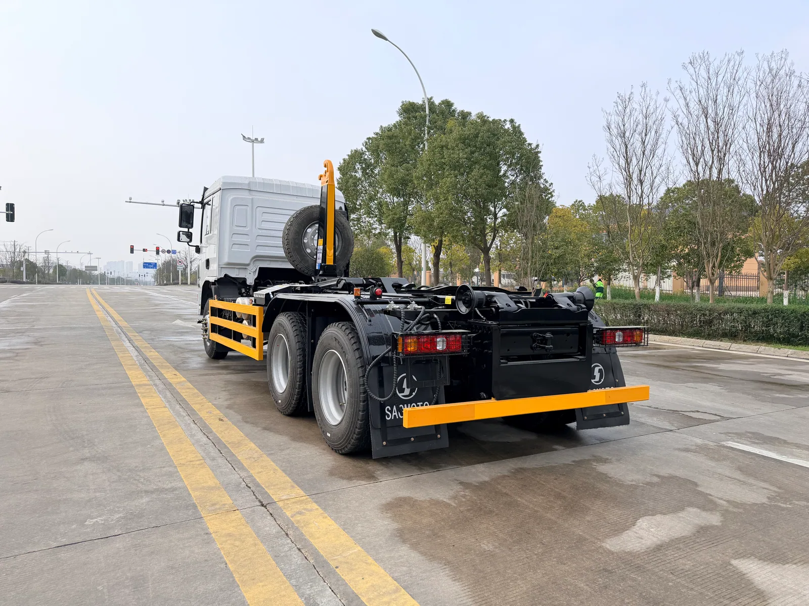
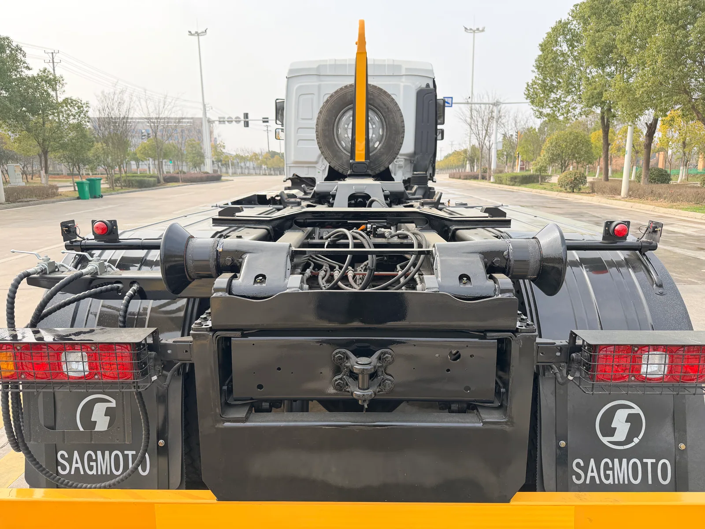

A hook-lift truck is not simply a chassis with a hydraulic arm added afterward. The lifter, container, chassis layout, hydraulic supply and working area must be compatible. The supplied SAGMOTO X5 platform material shows an X5s 6x4 hook-lift application intended to work with removable boxes. This guide explains what a fleet or body builder should define before selecting the final equipment.
Begin with the container already in the fleet
If containers are already in service, provide their drawings rather than relying on nominal volume or a verbal description. Record overall length and width, hook height and location, rail or roller arrangement, support points, empty mass and expected loaded mass. Photograph the container at its pickup points and provide a side elevation with dimensions.
When containers are new, define the material or waste stream, loading method, route between collection points and transfer site, and how containers are staged. Container dimensions affect the truck's wheelbase and rear overhang, maneuverability and axle loading. Final compatibility belongs in an approved interface drawing.
Check the lift sequence and working envelope
Describe the complete operating cycle: approach, alignment, loading, travel, unloading and container set-down. The truck may need room behind it for the container to roll or slide, a firm surface for the lifting sequence and overhead clearance. Tight alleys, curbs, uneven transfer yards and overhead obstructions should be documented early.
Confirm how the lifting system is powered and controlled, including power-take-off, hydraulic flow and pressure requirements, hose routing, control location and access for routine inspection. Do not infer capacity from a photograph; rated capacity and permitted operating geometry must come from the selected equipment documentation.

Chassis layout, mass and maintenance
The X5 material describes the X5s hook-lift chassis as prepared for special-equipment installation. The exact frame dimensions, axle ratings, wheelbase, engine, transmission and PTO compatibility still depend on the selected order configuration. A container's volume does not define its legal loaded mass; the container tare, contents, truck equipment and axle distribution all contribute.
Ask the local operating team what service capability exists for hydraulic hoses, seals, controls and the lifting structure. Fleet standardization may be more useful than choosing an unusual option if it makes parts and maintenance harder to support.
Buyer handover checklist
- Container drawing, hook dimensions and loaded mass
- Required number of compatible containers per truck
- Daily lift cycles and route between collection and transfer points
- Ground firmness, grade, rear clearance and overhead restrictions
- Required lifting-equipment rating and control arrangement
- Chassis, PTO and hydraulic specification confirmed by the body builder
- Destination requirements, inspection points and operator training scope
FAQ
Can one truck serve different container sizes?
Potentially, if the container interfaces and operating limits are compatible with the selected system. Confirm every container model against the approved drawings.
Does the pictured system establish a capacity figure?
No. A photo cannot verify a rated load or working envelope; use the final equipment documents.
When should the container be specified?
Before the chassis and lifter layout are frozen, so dimensions, loads and hydraulic interfaces can be checked together.
Review your hook-lift application
Send a container drawing, expected loaded mass, lift cycle and destination for a configuration review.
Submit requirements · WhatsApp +86 185 9197 6330 · X5 platform overview